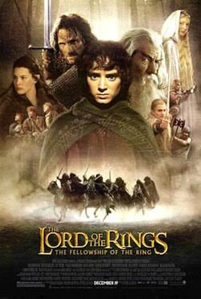

Özet:Gollumlu Ali görünmezlik sağlayan ve bazı güçler veren yüzüğü almıştır. Bir Hobbit olan Bilbo yaşlandığında yüzüğü varisine, Frodo’ya veri ama Mordor’da yüzüğe sahip olmayı isteyen Karanlığın Efendisi kuvvetlenir. Karanlık yavaşça çevreye yayılır. Yüzüğün bulunduğunu öğrendiğinde Kara Süvarilerini yüzüğü getirmesi için Frodo’ya yollar. Bir alim olan Gandalf Frodo’ya yüzüğü Hüküm Dağı’ndaki Cehennem Çukuru'na atarak yok etmesini ister ve yardım etmesi yanına bahçıvan Sam’i verir ama arkadaşları Merry ile Pippin de doğu yönüne onlarla gider. Ormanın içinden geçerler ama ağaçlar onlara geçit vermek istemez ve bir ağaç Merry’yi kendine çeker. Bu esnada Tom Bolbadil yardım eder. Eski dönemlerden beri yaşayan bu efsanevi adam onları ormanın dışına çıkarır. Bree’ye gelip Sıçrayan Midilli Hanı'nda Frodo, gösteri yapar iken yanlışlık eseri yüzüğü takar ve görünmez olur. Bu durumu gören Yolgezer kalabalıktayken yüzüğü takmasının yanlış olduğunu ve onlarla beraber geleceğini ifade eder. Gandalf’ın daha önce bıraktığı not üstüne Yolgezer’e güvenip beraber giderler. Kara Süvariler Frodo’yu Fırtına Tepesi’nde bıçaklar. Yarmavadi’de Elrond’un evinde tedavi edilir ama yara hiçbir zaman tam iyileşmez. Frodo Elrond’un evinde, bir sene evvel Shire’dan uzaklaşan Bilbo ile karşı karşıya gelir. Gandalf da Saruman denen ve alimlerin başında bulunan ama daha sonra Karanlıklar Efendisi’nin egemenliğine giren biri tarafından hapsedilir ve tam zamanında yetişemediğinden Frodo’ya yardım edemez. Elrond’un evinde kurul toplanır ve kurul yüzüğün ortadan kaldırılması kararını verir. Frodo ile Sam, Pippin, Merr, cüce Gimli, Elf Legolas, insan Boromir, Yolgezer ile Gandalf yola çıkar. Khazad-Düm Köprüsü'nden geçer iken düşmanları durdurmaya gayret eden Gandalf, köprüden aşağı düşer; ekip onun öldüğünü düşünür ve yola devam eder Lothlorien’e giderler. Ormanda Kraliçe Galadriel ile Kral Celeborn, onlara yardım eder. Ayrılır iken Galadriel bu kişilere hediye verir. Ulu Nehri Elflerin verdiği hafif kayıklar ile geçerler. Mola verdikleri zaman, Boromir yalnız iken Frodo’dan zor kullanarak yüzüğü almak ister. Frodo kaçar ve kurtulur. Frodo'yu bulan Sam ile, ekipteki diğer kişilere söylemeksizin Mordor’a devam eder. Ötkeilerin yaşamlarının tehlikeye girmesini istemez. Frodo ayrıldığı zaman grup Orkların saldırısıyla karşılaşır. Boromir Pippin ve Merry’i korur iken hayatını kaybeder. Orklar iki hobbiti esir eder. Gimli, Legolas ile Yolgezer, iki hobbiti kurtarmak üzere iz sürer. Bundan dolayı Yüzük Kardeşliği bozulur. Kategoriler Genel Son Gönderiler Orhan Toker’den Ailelere Dijital Farkındalık Çağrısı: Yeni Kitabı “Dijital Tsunami” Raflarda Orhan Toker’den Ailelere Dijital Farkındalık Çağrısı: Yeni Kitabı “Dijital Tsunami” Raflarda 01 Feb 2026 Gazeteciliğin Kalbine Bir Yolculuk: Mehmet Mert’ten “Manşete Giden Yol” Okuyucuyla Buluştu Gazeteciliğin Kalbine Bir Yolculuk: Mehmet Mert’ten “Manşete Giden Yol” Okuyucuyla Buluştu 19 Dec 2025 Yediveren Yayınları Sofya Uluslararası Kitap Fuarı'nda Yediveren Yayınları Sofya Uluslararası Kitap Fuarı'nda 03 Dec 2025 Yalnızlığın Rengi bireysel hisleri işliyor Yalnızlığın Rengi bireysel hisleri işliyor 14 Nov 2025 Siyah Renkli Aşk romanı ile Halit Şiran Hatay okurlarına merhaba diyor Siyah Renkli Aşk romanı ile Halit Şiran Hatay okurlarına merhaba diyor 09 Nov 2025 Benim Adım Pi çocuklara matematiği sevdiriyor Benim Adım Pi çocuklara matematiği sevdiriyor 02 Nov 2025 Çok Satanlar Çilli Balerin-Kahraman Tazeoğlu Çilli Balerin-Kahraman Tazeoğlu Dilek Cesur Seti 5 Kitap Takım Dilek Cesur Seti 5 Kitap Takım Ben Meryem-Hayallerime Bilet Var Mı?/Yediveren Yayınları Ben Meryem-Hayallerime Bilet Var Mı?/Yediveren Yayınları Hayalimdeki Yemekler